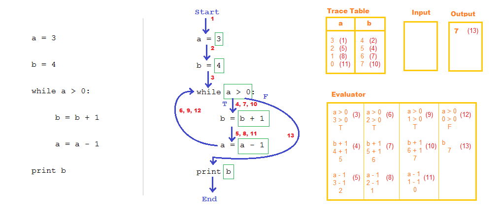

TRACS Online is a free, open-source teaching tool for annotating code samples. It runs in your browser and does not require any installation.
Originally a pen and paper exercise developed by Professor Quintin Cutts and Peter Donaldson. This site makes digital annotation fast and easy.
Start TRACS now! (JavaScript required)

Example TRACS annotation made using MS Paint
About
This site was developed as part of a final year dissertation at the University of Glasgow.
Source code can be found here.